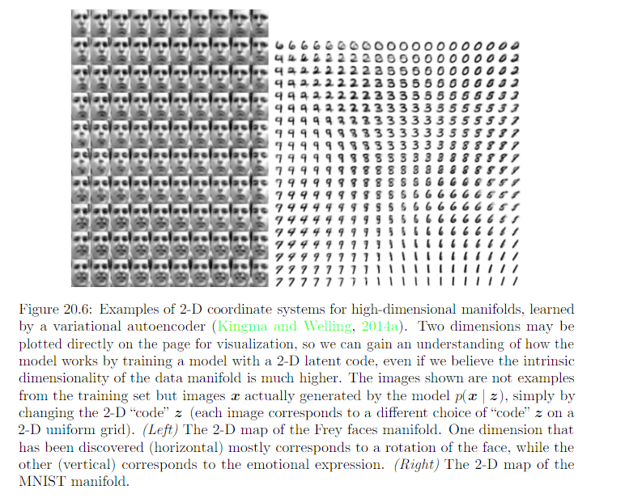
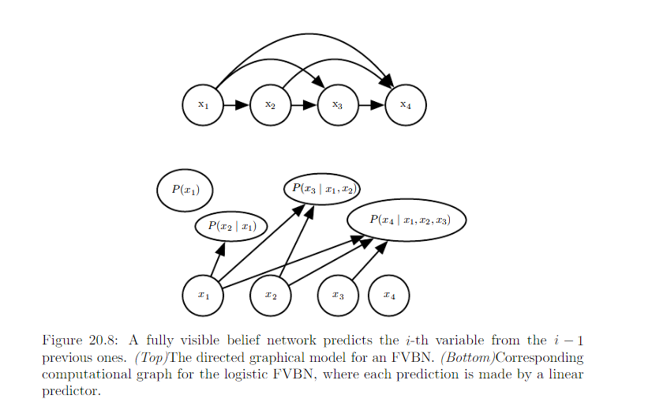
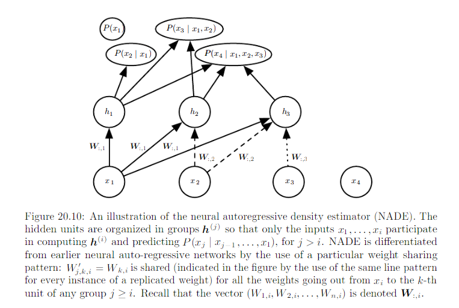

20.10 Directed Generative Nets¶
Review Deep Believe Network
Deep believe networks:
- Generative models
- Several layers of latent variables, typically binary.
- Visible units: maybe binary or real
- No intralayer connection
- The connection between the top 2 layers are undirected
20.10.1 Sigmoid Belief Network¶
In general, we can think of a sigmoid belief network as having a vector of binary state s, with each element if state influenced by its ancestors:
Most common structure of sigmoid belief network is the one divided into many layers, with ancestral sampling procceeding through a seriers of many hidden layers and then ultimately generating the visible layer. Note it is not deep belief network. Such structure is interesting because the structure is universal approximator of probability distributions over the visible units.
- Generating a sample: very efficient
- Inference: Intractable. Mean field inference also intractable.
Solution:
- construct a different lower bound that is specialized for sigmoid belief networks
- Another approach is to use learned inference machanisms as described in 19.5
Special case of sigmoid belief network: no latent variables. See auto-regressive network which generalize this fully visble belief network to other kinds of variables besides binary variables and other structures of conditional distribution besides log-linear relationships.
20.10.2 Differentiable Generator Networks¶
Differentiable Generator Networks: transform samples of latent variables z to sample x or to distribution over x using a differentiable function \(g(z; \theta^{(g)})\) which is typically represented by a neural network. This model class includes
- Variational autoencoders: pair generator with an inference net
- Generative Adverserial networks: pair gererator network with a discriminator network
Sampling x or to distribution over x defines a distribution \(p_g(x)\) and allow us to train various criteria of \(p_g(x)\) using the reparameterization tricks
Review on 20.9 Reparameterization trick:
When developing genertative models, we often wish to extend neural networks to implement stochastic transformations of x. Strategy
- Extra input z that are sampled from some simple probability, e.g. uniform or Guassian
- The neural network can then continue to perform deterministic computation internally
- The function f(x, z) will appear stochastic to an observer who does not have access to z.
We can build elements of the graph on top of the output of sampling distribution.
Reparameterization trick, stochastic back-propagation: \(p(x|w)\), with w being parameters \(\theta\) parameters, and if applicable, input x. We can rewrite \(p(x|w)\) into :math`:y=f(z;w)` where z is a source of randomness. We may then compute the derivative of y w.r.t. w using traditional tool such as back propagation algorithm applied to f, as long as f is continuous and differetiable almost everywhere. Cruciallt w must not be a function of z and z must not be a function of w.
- When generator defines a conditional distribution over x, it is capable of generating dsicrete data as well as continuous daya.
- when generator net provides samples directly, it is capable of generating only continuous data. Advantage: no longer forced to use conditional distributions whose form can be easily written down and algebraically manipulated by human designer.
Differentiable generator networks have sufficient model capacity to be good generative model and optimization algorithms have the ability to fit them. The difficulty lies in determining how to train generator networks when the value of z for each x is not fixed and known ahead of each time.
20.10.3 Variantional Autoencoders¶
The variational antoencoder or VAE is directed model that uses learned approximate inference and can be trained purely with gradient-based algorithm. Process of generating samples from the model:
- Draw a sample z from a distribution \(p_{model}(z)\)
- The sample z run through a differentiable generator network g(z)
- x is sampled from distribution \(p_{model}(x;g(z)) = p_{model}(x|z)\)
During training, the approximate inference network (or encoder) q(z | x) is used to obtain z, and \(p_{model}(x | z)\) is then viewed as a decoder network.
Review on variational lower bound
Introduce q as an arbitrary distribution over h
Now we have
Because KL divergence is always nonnegative we have lower bound
For appropriate of q, L is tractable to compute. For q(h) (textbook: q(h|v)) that are better approaximation of p(h|v), the lower bound would be tighter, meaning closer to log p(v). When q(h) = p(v|h), the approaximation is perfect, \(L(v, \theta, q) = log P(x; \theta)\).
In the context of VAE
The main idea behind variational autoencoder is to traina parametric encoder that produce the parameters of q. As long as z is a continuous variable, we can then back-prop through samples of z drawn from \(q(z|x) = q(z;f(x;\theta))\) to obtain a gradient with repect to \(\theta\). Learning then consists solely of maximizing L with respect to the parameters of the encoder and decoder. All the expectation in L may be approximated by Monte Carlo Sampling.
Drawback:
- Samples from variational autoencoders trained on images tend to be somewhat blurry.
- Tend to use only a small subset of the dimensions of z, as if the encoder were not abe to transform enough of the local distribution in input space where the marginal distribution matches the factorized prior
VAE framework is straightforward to extend to a wide range of model architectures. This is a key advantage over Boltzman Machines
- Deep recurrent attention writer (DRAW) uses a recurrent encoder and recurrent decoder combined with an attention machanism.
- Generate squences by defining variational RNN by usin a recurrent encoder and decoder within the VAE framework
- Importance-weighted antoencoder
Comparison:
VAE
- The variantional autoencoder is defined for arbitrary computational graphs, which makes it applicable to a wider range of probabistic model families because there is no need to restrict the choice of models to those with tractable mean field fixed-point equitions.
- Has the advantage of increasing a bound on the log-likehood of the model
- learns an inference for only one problem, inferring z given x
MP-DBM and other approaches that involve back-prop through the approximate inference
- require an inference procedure such as mean field fixed-point equitions to provide the computational graph.
- more heuristic and have little probablistic interpretation beyond making the results of approximate inference accurate.
- Are able to perform approximate inference over any subset of variables given any other subset of variables, beacuse mean field fixed-point equition specify how to share parameters between the computational graphs for all the different problems.
Nice property of VAE: Simultaneously training a parametric encoder in combination with the generator network forces the model to learn a predictable coordinate system that the encoder can capture.
Example:
- KL Divergence
Consider 2 multivariant normal distributions
Now we have
Focus on small part:
For another for
So,
Now we look back to variational auto encoder

The goal of VAE: to find a distribution \(q_{\phi}(z| x)\) of some latent variable z which we can sample from it. The generate new samples from \(x \sim q_{\theta}(x'|z)\)
Challenge of traditional auto-encoder: when we feed a trained encoder some unknown vector (not in training dataset) as x, decoder cannot decode the z into something meaningful. Decoder does not expect z to be from a distribution from out side of training set. VAE tries to solve the problem by making sure the encoding from some known probability distribution can be decoded to a reasonal output when if they are not the encoding of actual training set. So instead forcing the encoder to produce a single encoding, it forces the encoder to produce a probability distribution function over the encodings.
- To sample x, we need to know p(x).
- \(p(x) = \int_z p(x | z)p(z)dz\).
- The integral is not in closed form, aka, intractable due to multiple integrals of involved for latent variable z.
- The alternative is to approximate p(z|x) by another distribution q(x|z) which is defined in such a way that it has tractable solution.
- This is done by using variational inference.
- The main idea of variational inference is to pose the inference problem as an optimization problem, by modeling p(z|x) using q(z|x) when q(z|x) is a simple distribution such as Gaussian.
- How to measure the distance between p(z|x) and q(z|x)? In the context of variational inference, KL divergence. If we minimize this distance, we are approximating q(z|x) to p(z|x).
Now we have
And this is VAE objective function
- 1st \(E_{z \sim Q_{\phi} (z|x)}(\log p_{\theta}(x|z))\): represent reconstruction likehood
- 2nd \(KL[Q_{\phi} (z|x) || p_{\theta} (z)]\): ensure that our learned distribution Q is similar to the prior distribution \(p_{\theta} (z)\)
The loss function = - objective function
20.10.4 Generative Adverserial Network¶
- Generator: directly produces samples \(x = g(z;\theta^{g})\)
- Discriminator: attempts to distinguish between samples from the trianing data and samples drawn from the generator. The discriminator emits a probability value given by \(d(x;\theta^{d})\), indicating the probability that x is a real training example rather than a fake samples drawn from the model.
Simplest way to formulate learning in generative adverserial network is as a zero sum game, in which a function \(v(\theta^{(g)}, \theta^{(d)})\) determines the payoff of the discriminator. The generator receives \(-v(\theta^{(g)}, \theta^{(d)})\) as its own pay off. During learning, each player attempts to maximize its own payoff, so that at convergence
The default choise for v is
The main motivation for the design of GAN is that learning process requires neither approximate inference nor approximation of partition function gredient.
Learning in GANs can be difficult in practice when g and d are represented by neural networks and \(max_d v(g, d) is not convex\). Note the equilibria for minimax game are not local minima of v. Instead, they are points that are simulteneously minima for both player’s cost. This means that they are saddle points of v that are local minima with respect to the first player’s parameters and local maxima with respect to the second player’s parameters. It is possible for two players to take turns increasing then decreasing v forever, rather than landing exactly on the saddle point, where neither player is capable of reducing its cost.
Stablization of GAN learning remains an open problem. Fortunately, GAN learning perform well when the model architecture and hyperparameters are carefully selected.
GAN’s training procedure can fit probability distribution that assign 0 probability to the training points. Rather than maximizing the log-probability of specific points, the generator net learns to trace out a mamifold whose points resemble training points in some way.
Units in discriminator should be stochastically dropped while computing the gradient for the generator network to follow.
20.10.5 Generative Moment Mathcing Networks¶
Generative moment matching networks are trained with a technique called moment matching. Moment matching: train the generator generator in such a way that many of the statistics of samples generated by the model are as similar as possible to those of the statistics of the examples in the training set. In this case, a momen is an expectation of differnt oiwers of a random variable.
Generative moment matching networks can be trained by maximizing a cost function called maximum mean discrepancy, or MMD. This cost function measures the error in the first moments in an infinite-dimentional space, using an implicity mapping to feature space defined by a kernel function to make computations on infinite-dimentional vectors tractable. The MMD cost is zero if and only if the 2 distributions being compared are equal.
When the batch size is too small, MMD can underestimate the amount of variation in the distributions being sampled.
As with GANs, it is possible to train a generator net using MMD even if that generator net assigns 0 probability to the training points.
20.10.6 Convolutional Generative Networks¶
Conv net for recognition: information flow from image to some summarization layer at the top of the network, become more invariant to nuisance transformation. In generator network, the oppsite is true. Rich detail must be added as the representation of the image to be generated propagates through the network, culminating in the final representation of the image, which is of courtse the image itself, with object positions and poses and textures and lighting.
The primary mechanism for discarding information in a convolutional network is the pooling layer. We cannot put the inverse of the poolin layer into generator network because most pooling functions are not invertible. An approach that seems to perform acceptably is to use an “un-pooling”. This layer correponds to the inverse of the max-pooling operation under certain simplifying conditions.
- Stride of the max-pooling operation is constrained to be = width of the pooling region
- Maximum input within each pooling region is assumed to be the input in the uppper left corner
- All nonmaximal inputs within each pooling region are assumed to be 0.
Even though the assumption motivating the definition of the un-pooling operator are unrealistic, the subsequient layers are able to learn to compensate for its unusual output, so the samples generated by the model as a whole are visually pleasing.
20.10.7 Auto-regressive Networks¶
Auto-regressive networks are directed probabilistic models with no latent random variables. They decompose a joint probability over the observed variables using the chain rule of prpbability to obtain a product of conditionals of the form \(P(x_d|x_{d-1}, ... x_1)\). Such models have been called fully-visible Bayes network and used successfully in many forms.
20.10.8 Linear Auto-Regressive networks¶
The simplest form of auto-regressive network has no hidden units and no sharing of parameters or features. Each \(P(x_i|x_{i-1}, ... x_1)\) is parameterized as a linear model
- Linear regression: real valued data
- Logistic regression: binary data
- Softmax regression: discrete data
This model has \(O(d^2)\) parameters when there are d variables to model.
Linear auto-regression networks are essentially the generalization of linear classification models to generative modeling. They therefore have the same advantages and disadvantages as linear classification.
- They must be trained with convect loss functions and sometimes admit closed form solution
- The model iteself does not offer a way of increasing its capacity, so capacity must be raised using techniques like basis expansions of the input or the kernel trick.
20.10.9 Neural auto-regressive network¶
Neural auto-regressive networks have the same left-to-right graphical model as logistic auto-regressive networks (figure 20.8 above). The new parametrization is more powerful in the sense that its capacity can be increased as much as needed, allowing approximation of any joint distribution. The new parametrization can also improve generalization by introducing a parameter sharing and feature sharing principle common to deep learning in general. By using neural networ, 2 advantages are obtained:
- The parametrization of each \(P(x_i | x_{i-1}, ..., x_1)\) by neural network with (i - 1) * k input and k output (if the vriables are discrete and take k values, encoded one-hot) enables one to estimate the conditional probability without requiring an exponential number of parameters (and examples), yet still is able to capture high order dependencies between the random variables.
- Instead of having a different neural network for the prediction of each \(x_i\), a left to right connectivity allows one to merge all the neural networks into one. Equivalently, it means that the hidden layer features computed fpr predicting \(x_i\) can be resued for predicting \(x_{i+k}\)

You can extend the model to continuous variables or joint distributions involving both discrete and continuous variables.
20.10.10 NADE¶
The neural auto-regressive density estimator (NADE): the connectivity is the same as for the original neural auto-regressive network, but NADE introduces an additional parameter sharing schema. The parameters of the hidden units of different groups j are shared.
Forward propagation in a NADE model would loosely resemble the computations performed in mean field inference to fill in missing inputs in an RBM. This mean field inference corresponds to running a recurrent network with shared weights and the first step pf that inference is the same sa in NADE. The only differenceis that with NADE, the output weights connecting the hidden units to th output are parametrized independenly from the weights connecting the input unist to the hidden units. In the RBM, the hidden-to-output weights are the transpose of the input-to-hidden weights.
Another extension of the neural auto-regressive architectures gets rid of the need to choose an arbitrary order for the observed variables. Since many oerders of variables are possible and each order o of variables yield a different p(x | o), we can form an ensemble of model for many valueso of o:
This ensemble model usually generalize better and assign hight probability to the test set than does an individual model defined by a single ordering.